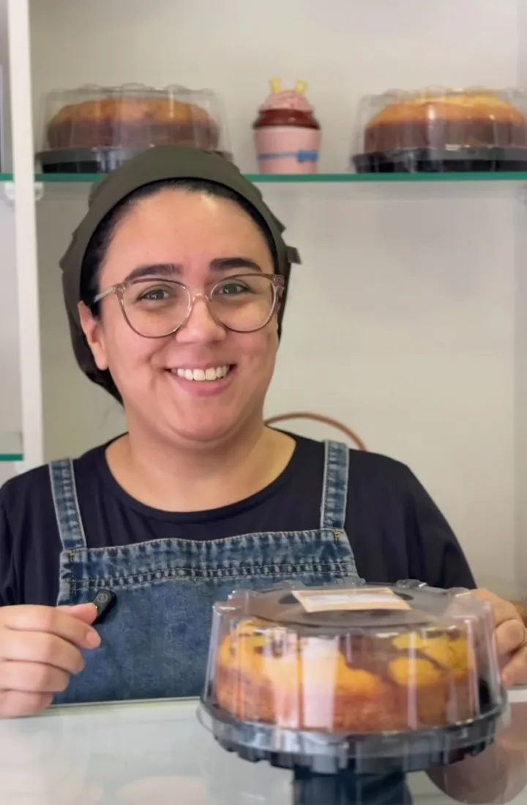
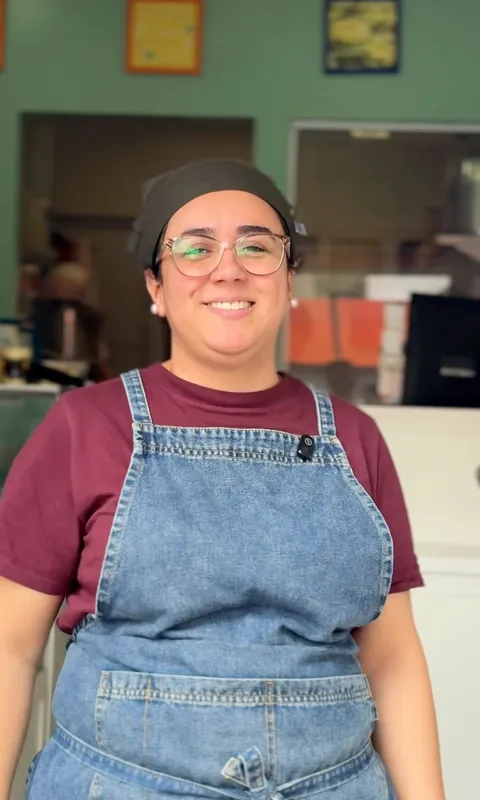

Produtos caseiros sem conservantes.
Doces e bolos caseiros na Rua Dona Francisca, 141, em Joinville. Escolha o seu e peça pelo WhatsApp.

Da vitrine da Humm
Alguns dos doces que a Humm já mostrou. Toque na foto para ver maior.
-
Copo de morango com creme
-
Bolo com cobertura branca e coco
-
Morango inteiro envolto em doce
-
Bolo de chocolate com granulado
A cada mordida, Humm...delícia!
É assim que a Humm se apresenta.Bolos, docinhos, salgados e sobremesas
Tudo caseiro e sem conservantes. Pergunte pelo WhatsApp o que tem pronto e o que precisa encomendar.
- Naked Cake
- Caseirinhos
- Docinhos
- Salgados
- Sobremesas
- Sem lactose
- Páscoa
- Festa junina
Peça pelo WhatsApp
Mande uma mensagem dizendo o que você quer. O horário e as formas de pagamento você confirma por lá.
- Endereço
- Rua Dona Francisca, 141 · Joinville, SC · 89201-250
- (47) 9133-6480
